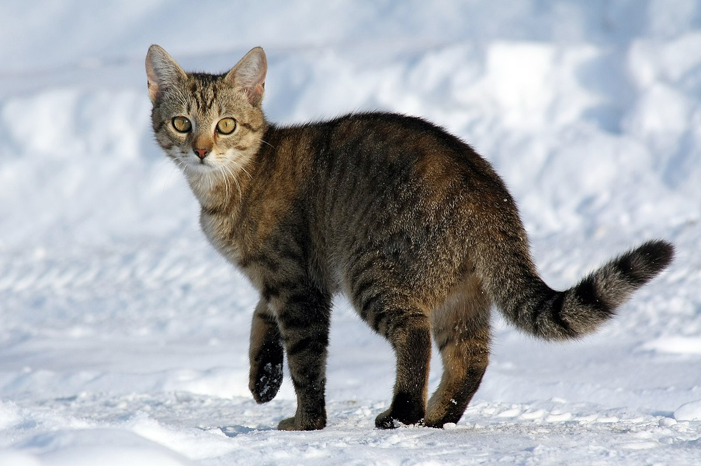

Cat
The cat (Felis catus) is a small carnivorous mammal. It is the only domesticated species in the family Felidae and often referred to as the domestic cat to distinguish it from wild members of the family. The cat is either a house cat, kept as a pet, or a feral cat, freely ranging and avoiding human contact.[cite: 2] A house cat is valued by humans for companionship and for its ability to hunt rodents. About 60 cat breeds are recognized by various cat registries.[cite: 2]

A Tabby cat in snowy weather

The hooked papillae on a cat's tongue act like a hairbrush to help clean and detangle fur[cite: 2]
Cats are similar in anatomy to the other felid species, with a strong flexible body, quick reflexes, sharp teeth and retractable claws adapted to killing small prey. They are predators who are most active at dawn and dusk (crepuscular). Cats can hear sounds too faint or too high in frequency for human ears, such as those made by mice and other small animals. Compared to humans, they see better in the dark (they see in near total darkness) and have a better sense of smell, but poorer color vision. Cats, despite being solitary hunters, are a social species. Cat communication includes the use of vocalizations including mewing, purring, trilling, hissing, growling and grunting as well as cat-specific body language.[cite: 2] Cats also communicate by secreting and perceiving pheromones.[cite: 2]
Female domestic cats can have kittens from spring to late autumn, with litter sizes ranging from two to five kittens. Domestic cats can be bred and shown as registered pedigreed cats, a hobby known as cat fancy. Failure to control the breeding of pet cats by spaying and neutering, as well as abandonment of pets, has resulted in large numbers of feral cats worldwide, contributing to the extinction of entire bird species, and evoking population control.[cite: 2]